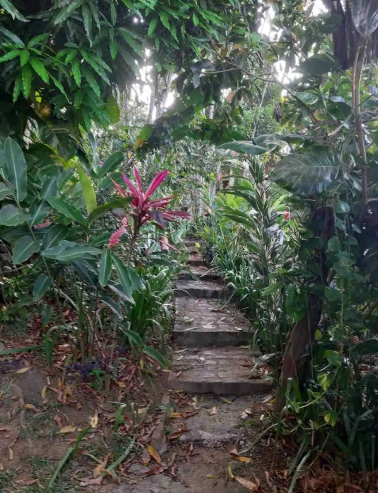
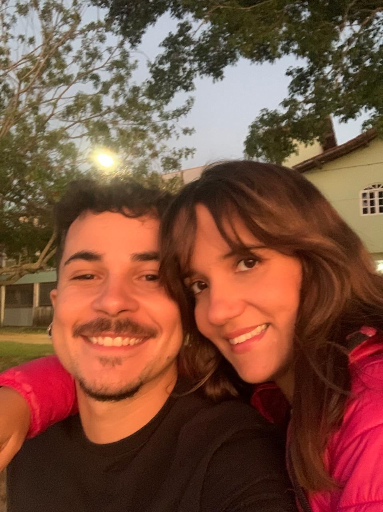

11 de Novembro: Mesmo no meu emaranhado de sentimentos e dúvidas, foi ai, que despretensiosamente
chamei ela pra ir na casa da minha mãe em Praia Grande (e talvez inconscientemente sabendo que daria em algo).
E pra me fuder de vez, o final de semana foi mágico, demos um role irado numa praia deserta onde tivemos
a primeira experiência como pais adotando cachorros de rua que abandonamos, e o pior: minha mãe
amou ela.
Já estava conversando todos os dias, se vendo cada vez mais e mais, e eu, perdidin, com medo de aceitar
que tava apaixonado, tinha uma calourada no próximo dia (12 de Novembro) pra confirmar que não queria mais aquela vida.
Dito e feito, já cheguei meio desanimado, imaginando que seria muito melhor se ela tivesse lá.
3 dias depois, na mesma semana, em uma terça feira, chamei ela pra dar um role na praia e vi a cena da foto,
uma menininha fofinha de quase 30 anos, botando o pézinho no mar olhando pro céu, depois (ou antes, não lembro) de cometer mil
atrocidades sexuais na beira da praia comigo. Era isso, amigos: estava apaixonadasso, não tinha mais dúvida. Mesmo depois disso,
tinha um certo receio de admitir pra ela, por medo de não ser recíproco (mesmo estando meio escancarado que era) e por receio
dela estar gostando de ex ainda, já que ela ficava postando um monte de coisa no Tumblr e eu tinha escavado
cada detalhe da vida amorosa/sexual dela, e fiquei enrolando com medo de me fuder.
11 de Dezembro: Chamei ela pra ir numa rave comigo, e puta que pariu, que companhia sensacional. Ela nunca tinha ido em uma e parecia que já era
ratinha de festa, soltinha, feliz, saltitante e sempre me dando uns beijin travado. Dançamos até quase no final, rindo igual retardados
um pro outro toda hora, dois emocionados com a vibe do outro, com uma sinergia absurda que é difícil de ver.
Chegando em casa, no finalzinho da onda, depois de um dia foda do caralho, pós banho juntos, mortos com farofa, a gente deita juntinho,
ela olha pra mim, no escurinho do quarto, e diz que me ama. Era a coisa que eu mais queria ouvir em muito tempo, a confirmação que eu poderia me entregar
e que eu não estava amando sozinho.
Porém, mesmo depois disso, como bom procrastinador e não romantico, tivemos um hiato relativamente grande de progresso na vida amorosa,
depois de tantas confirmações, dela conhecer toda minha família e eu conhecer a dela, passar ano novo juntos,
ter adotado um filho passáro, e vivendo como namorados se vendo várias vezes por semana, eu enrolei por quase 2 meses pra tomar a melhor decisão da minha vida:
pedir ela em namoro.
Dia 29 de Fevereiro de 2023: O que você espera de como vai ser um pedido de namoro pra uma pessoa super romântica, que idealiza filmes românticos
e sempre deixou isso claro? Um pedido super legal né? ERRADO!
Eu, no auge da minha retardadice, que já queria pedir há muito tempo mas estava procrastinando, num momento de felicidade extrema, bebados, no meio de um show grátis
na praia, cheguei no ouvido dela e perguntei se ela queria namorar comigo. Sem aliança, sem ajoelhar, sem nada, só isso. Que arrependimento, meus amigos, ela não merecia só isso.
Mesmo assim, ela aceitou, estavamos felizes, e começamos nossa vidinha juntos.

Fizemos nossa primeira viagem só os 2, dia 3 de março, pro lugar que mais amo no mundo e queria mostrar pra ela. Mas mal sabia o que nos esperava lá: nossa primeira briga como namorados.
Meu psicólogo sempre falava que ia chegar em um momento de "aparar as pontas", que brigariamos bastante pra ajustar as coisas, e aquele momento tinha chegado. Essa maldita escada,
e minha pão durice de comprar um café foram o pontapé pra isso. Eram inseguranças não resolvidas, insatisfações com meu jeito não romantico, ex's aparecendo, qualquer coisa era motivo.
Passamos por um caos absurdo, de brigas direto e spoiler: ta durando até hoje, porém cada vez mais calmo.

E seguimos, mesmo nesse caos, eu não perdia nunca a certeza de que ela era a mulher da minha vida. Terminávamos e voltavamos em menos de 1 hora, ficavamos mal mas não conseguiamos
ficar separados. Segundo ela eu sempre estava errado, e na maioria das vezes estava, e demorei pra aceitar isso. Fomos mudando, se ajustando, continuando brigando, mas cada vez por motivos
mais bestas, só não sabendo brigar. Se tivessemos um expectador real, observando cada briga, tenho certeza que ele estaria numa apreensão fudida, nos achando 2 retardados
brigando por motivos bestas, com medo dessa história linda acabar, mas nunca acabava.
Acho que dai que vem um pouco da emoção do nosso filme, mas já foi o suficiente pra prender o leitor, então estamos na meta de parar. E estamos conseguindo aos poucos.